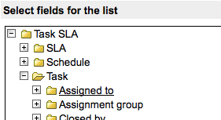
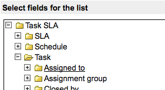

Creating an SLA Workflow
| |
Note: This article applies to Fuji. For more current information, see Service Level Management Concepts at http://docs.servicenow.com
The ServiceNow Wiki is no longer being updated. Please refer to http://docs.servicenow.com for the latest product documentation. |
1 Overview
Functionality described here requires the Service level management plugin.
The base system workflow that comes with the plugin is Default SLA Workflow:

This example creates a new Urgent SLA workflow to be used for a priority one ticket.
2 Creating an SLA Workflow
To create an SLA workflow, navigate to Service Level Management > Workflow Editor. This launches the Graphical Workflow Editor. Select New in the top left, and populate the first form with the following information:
- Name: Urgent SLA Workflow.
- Table: Task SLA [task_sla]. All SLA workflows must be on the Task SLA table regardless of what table the SLA will be running against.
- If Condition Matches: None. Because no conditions will be specified since it is set to none, the SLA will not run unless specified by a particular SLA. Note that if this option is not set to None, the workflow runs on any task_sla record that meets these conditions. If no conditions are specified, the workflow attaches to all new task_sla records.
The form should now look like this:
{kind=link}
Click Submit. There is now a workflow with a beginning and end. Next, add activities for the events that you want to be triggered with the Urgent SLA workflow.
Suppose the desired process is:
- After 33% of the SLA's duration, alert the user assigned to responding to the task.
- After 66% of the SLA's duration, notify the assignee's manager.
- After 100% of the SLA's duration, notify the Customer Care representative that the SLA has been breached.
To define that process as a workflow:
- Drag the SLA Percentage Timer activity onto the arrow between Begin and End.
- Name the activity 33% Timer, and enter 33 in the Percentage field.
- Click Submit.
- Drag the Notification activity into the empty space below the 33% Timer activity.
- Name the activity Notify Assignee.
- Next to the To field, click the lock icon. Then click the variable picker icon (
 ) and select Task SLA > Task > Assigned To.
) and select Task SLA > Task > Assigned To.
- 
- Enter a subject and email body as necessary.
-
- 
- Click Submit.
- Click the yellow box on the side of the 33% Timer activity and drag to the Notify Assignee activity. This creates an arrow between both activities.
- Drag a new SLA Percentage Timer activity onto the arrow between the 33% Timer and End activities.
- Name the activity 33% Timer 2, and enter 33 in the Percentage field.
- Click Submit.
- Drag a new Notification activity into the empty space below the 33% Timer 2 activity.
- Name the activity Notify Assignee's Manager.
- Next to the To field, click the lock icon. Then click the variable picker icon () and select Task SLA > Task > Assigned To > Manager.
- Click Submit.
- Drag an arrow from the 33% Timer 2 activity to the Notify Assignee's Manager activity.
- Drag a new SLA Percentage Timer activity onto the arrow between the 33% Timer 2 and End activities.
- Name the activity 33% Timer 3, and enter 33 in the Percentage field.
- Click Submit.
- Drag a new Notification activity into the empty space below the 33% Timer 3 activity.
- Name the activity Notify Customer Care.
- Next to the To field, click the lock icon. Then in the Enter email address field, enter customercare@yourcompany.com.
- Click Submit.
- Drag an arrow from the 33% Timer 3 activity to the Notify Customer Care activity.
- In the title bar of the editor, click the menu icon and select Publish.
{kind=link}
{kind=link}
{kind=link}
{kind=link}
{kind=link}
The published workflow is now available to any SLA. It can be edited at any time after it is checked out from the workflow editor.
3 Special Considerations for Workflow Stages
If you want to add workflow stages to an SLA workflow, you cannot use the existing task_sla.stage column as the Stage field because this column was not designed for workflow stages, and changing values in this field prevents the system from accurately determining the SLA state. Instead, create a suitable workflow field to contain the workflow stages.